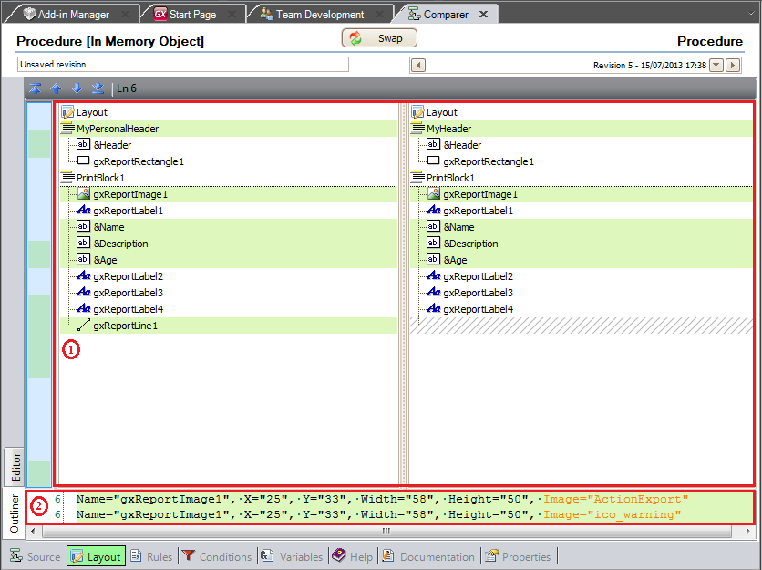
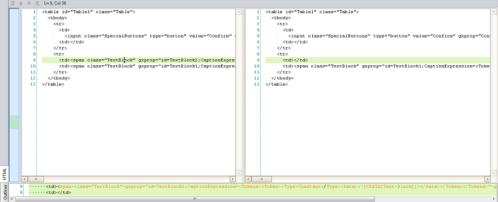
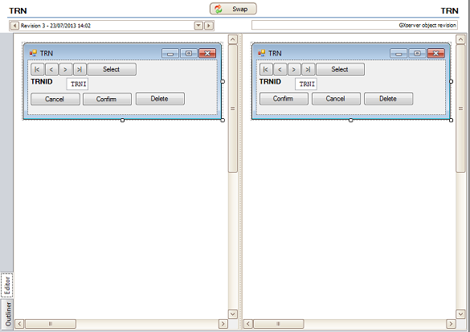

The Work Panel Form, Web Panel form and Layouts can be compared using the Editor, HTML or Outliner view. OutlinerThe Outliner option is used to compare two objects or two revisions of the same object in an structured way, displaying its elements as part of a hierarchy. Elements with changes are highlighted, as displayed in section 1 in the image below:  The highlighted elements in the above image are those with differences, which are displayed, and also highlighted, in Section 2 of the image. When an element is inserted or deleted, a striped line will be displayed, as the gxReportLine1 element in the image above. Note: The Outliner option is available as of GeneXus X Evolution 2 Upgrade 4. Editor/HTMLThe Web Panel's Form may also be compared through it's HTML code:  When comparing Procedures or Work Panels the Work Panel's Form or Layouts may be compared using the Editor comparer. This comparer displays the two objects/revisions in the same window.  Note: Changes are not highlighted when using the Editor option. AvailabilityThis feature is available as of GeneXus X Evolution 2 Upgrade 4. See also
HowTo: Compare Knowledge Base objects
|
| Backlinks |
| HowTo: Compare Knowledge Base objects |